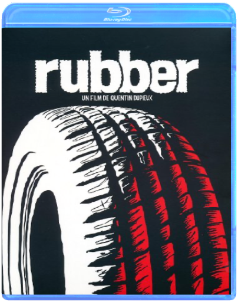

 rubber - collector 2 dvd + blu rayquentin dupieux  RUBBER - COLLECTOR 2 DVD + BLU RAY [BLU-RAY] sevendavid fincher Ce film est le plus viscéralement effroyable depuis Le Silence des agneaux. Seven est basé sur une idée à la fois horrible et ingénieuse. Les meurtres, inspirés par les sept péchés capitaux, donnent lieu à une mise en scène grotesque et pathétique. Du générique d'introduction à l'abominable et inévitable dénouement, David Fincher nous immerge dans une ambiance urbaine glauque et crépusculaire où tout semble rouiller, moisir et pourrir. L'air y est lourd et glacial. Morgan Freeman et Brad Pitt sont tous deux brillants dans les rôles des détectives qui retrouveront la trace du tueur sans s'apercevoir que ce dernier est lui aussi sur leurs pas. On retrouve également l'excellente Gwyneth Paltrow et le non moins remarquable Kevin Spacey, mais les vraies stars du film sont Fincher et l'ambiance terriblement oppressante qu'il a su créer. Faites de beaux rêves. —Jim Emerson  SHERLOCK HOLMES - INTÉGRALE - VF - EDITION COLLECTOR |  Bienvenue dans le monde du conte de fée irrévérencieux. Shrek est un pied de nez à toutes les merveilleuses histoires de notre enfance. En contant les aventures d'un ogre vert, d'un âne et d'une princesse aussi mal dégrossie que Blanche-Neige était délicate, le studio de production de Steven Spielberg a misé sur la pure fantaisie et l'humour décalé. Ce qui donne une petite merveille du genre. Tout au long de son parcours, Shrek rencontre des personnages magiques pris à contre-courant : un pseudo-prince charmant aussi teigneux que sa taille est petite, un impressionnant dragon qui se révèle en fait être une grande amoureuse, une princesse adepte du rot et cachant un terrible secret.  Adaptation du comic book d’un des plus grands auteurs / dessinateurs de sa génération, Sin City permet à Robert Rodriguez de peaufiner son style. Visuellement à tomber par terre, avec son noir et blanc d'une classe folle, son casting habité et sa direction artistique méticuleuse, le film réussit à donner vie à de nombreux personnages complexes et touchants. Les hommes sont à la fois victimes et bourreaux, durs et tendres, et se battent pour sauver leur honneur dans un monde gangrené par la corruption. Rodriguez réussit le plus ardu : donner vie à de purs fantasmes de cinéma en jouant le premier degré. La compréhension qu’il donne de l'univers de Miller alliée à l’efficacité redoutable de sa mise en scène offre à Sin City une richesse narrative et une force visuelle des plus réjouissantes. Reprenant les mêmes menus très réussis de l’édition simple, l’édition collector offre un second disque dédié à des suppléments qui font la part belle aux impressions de tournage du réalisateur et des interprètes. A noter le module sur l’univers de Frank Miller, qui dresse un petit portrait des œuvres majeures de Miller au travers d’interviews croisées de trois éditeurs / dessinateurs français, dont Enki Bilal. www.ecranlarge.com the skullsrob cohen The Skulls est un thriller formaté pour "ado", sorti au États-Unis peu de temps après les Souviens-toi l'été dernier et autres Urban Legend. Les acteurs n'ont pas plus de dix-huit ans et sont tous jeunes, beaux et riches. Malheureusement pour eux, ils n'ont pas de chance. Les spectateurs plus jeunes seront d'ailleurs heureux de retrouver Joshua Jackson, l'un des acteurs principaux de la série culte Dawson. Ce dernier joue ici le rôle d'un étudiant modèle. Sportif émérite, il est recruté sur le campus de l'université par une société secrète, les Skulls. À l'origine de la CIA, cette confrérie élitiste est régie par ses propres règles. À l'intérieur, notre jeune étudiant découvre alors, à ses dépens, le véritable visage des Skulls. Le scénario n'est pas sans rappeler celui de La Firme : un jeune homme, plein d'espoirs, cherche à sortir des griffes d'une organisation toute-puissante, au-dessus des lois. La comparaison s'arrête là. Le film manque de rythme, et l'histoire se révèle tout ce qu'il y a de plus classique. Au final, le film est sans surprise mais se laisse regarder avec plaisir. Du côté des bonus, ce DVD ne vous laissera pas sur votre faim puisque vous aurez accès à 10 scènes inédites, un making-of et de nombreux autres suppléments. —Frédéric Danilewski  L'histoire du cavalier sans tête est un classique des légendes américaines destinées à effrayer les enfants. Basé sur La Légende de Sleepy Hollow, de Washington Irving, ce film mélange frayeur, suspense et sourire : en 1799, un jeune inspecteur de New York, Ichabod Crane, doit résoudre une affaire de meurtres en série par décapitations ! La marque de fabrique de Tim Burton se dégage parfaitement de l'image et de l'adaptation pleine d'humour noir. De plus, grâce aux bonus, vous découvrirez qu'il ne s'agit pas de la première version, cinéma ou téléfilm, à avoir été tournée. À noter aussi, la possibilité de profiter de l'excellente bande-son. Un making of et une série d'interviews plus tard, vous pouvez toujours vous balader sur les pages des six filmographies proposées. De quoi s'offrir un bon frisson post-halloween… —Max Renne |

Julien
Collection Total:
1 893 Items
1 893 Items
Last Updated:
Oct 20, 2021
Oct 20, 2021


 Made with Delicious Library
Made with Delicious Library